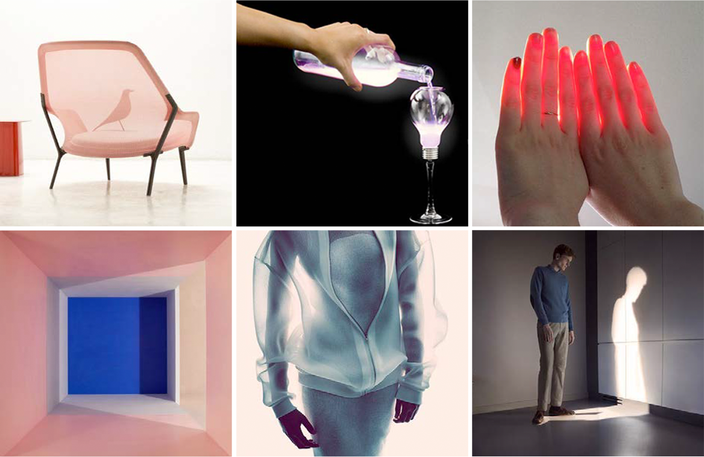
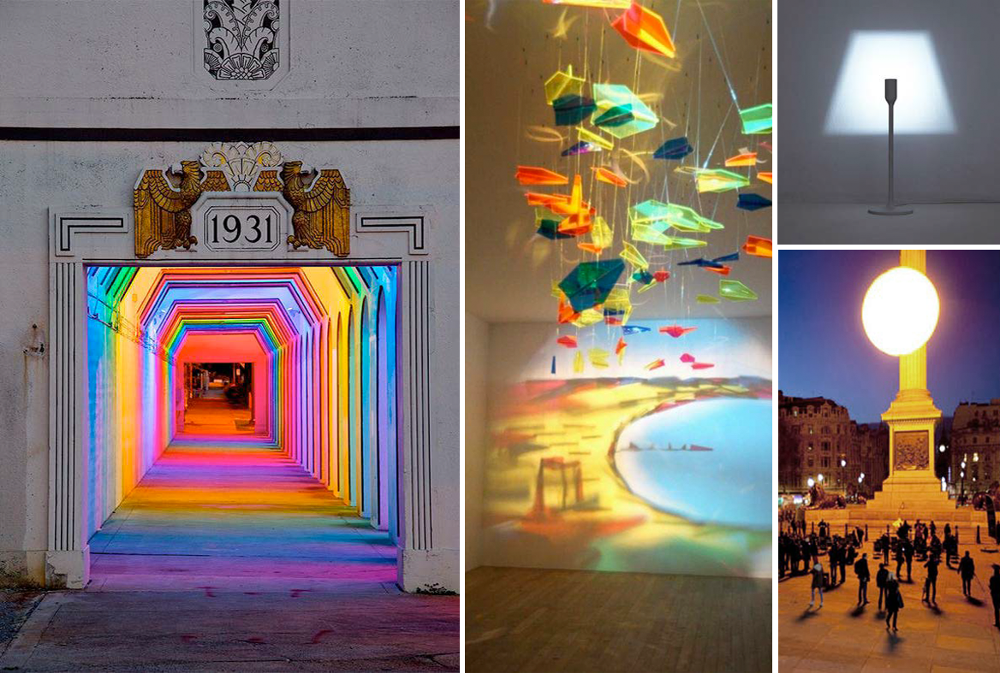

1
Luminescences is the emitting of light through
a substance that has not been heated.

The role of light in our lives
TV is the go to medium for group interaction and
entertainment.
Physically it's the most prolonged comfortable
experience users have. It reciprocates minimal
interactions with lingering pleasure.
"Look Simba, everything the light touches is our kingdom"
